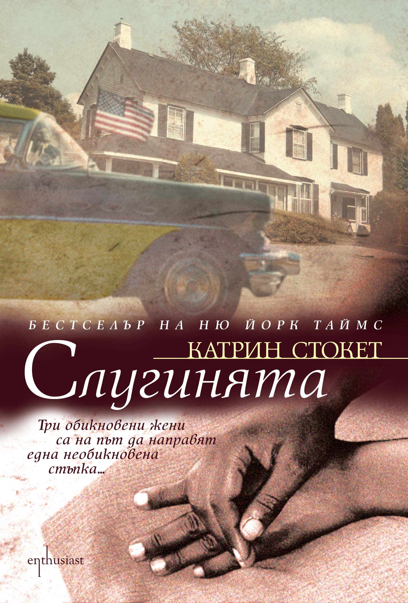

Ревю 1
По това време – времето между две години – традиционно много хора си правят равносметки. Аз, честно казано, ги избягвам – не си падам по задълбочените вътрешни монолози. Оня ден обаче, последния работен за 2016-а, след като за пореден път се изненадах колко бързо са минали двайсетте минути от ежедневния ми маршрут в метрото на път за работа, четейки книга, осъзнах, че едно от най-смислените неща, които ми се случиха през изминалата година, бяха книгите, които ми попаднаха – къде случайно, къде нарочно, но категорично бяха попадения. Ето го моя топ 5:
ЯПОНСКИЯТ ЛЮБОВНИК
Обожавам да започвам годината с хубаво четиво и последната книга на Исабел Алиенде се появи точно навреме, за да спазя личната си традиция. Този роман е поредното доказателство, че кралицата на магическия реализъм ще се превърне в класик приживе. Ако не сте чели нищо от нея и особено ако същевременно сте от нежния пол, горещо препоръчвам да започвате веднага с което и да е нейно заглавие. Дори и да не се впечатлите от дълбочината на многопластовия сюжет или пълнокръвието на всеки от героите, то поне ще се изненадате от изреченията с дължина половин страница, които се четат на един дъх, неусетно. Може спокойно да посегнете и към гореспоменатото, достатъчно красноречиво е, но не се подвеждайте – това в никакъв случай не е розов роман.
ШАНТАРАМ<
Като пролетна стихия ме връхлетя тази книга, която може да се нарече „модерна“ в момента и като такава търпи критика на надценена. Тя обаче трябва да е настолно четиво за всеки, който възнамерява да посети Индия, за да го подготви по най-вълнуващия начин за мизерията и престъпността, върлуващи из страната, но и за големите, отворени сърца на обитателите й. Освен това просто учудва как е възможно всичко, изживяно от Грегъри Дейвид Робъртс, да се случи в рамките на един човешки живот, че и по-малко. Така ми се прииска да живея малко по-шантарам.
СПАСИТЕЛЯТ В РЪЖТА
Не съм го чела като ученичка, макар че беше в списъка за лятната ваканция. Тази година някак си му дойде времето, и то точно докато лежах на плажа, поне спазих клаузата лятната ваканция. С пиперливия език на нацупения лирически герой Селинджър ту ме разсмиваше, ту ме тласкаше към дълбока депресия, с една дума живо изпитах отново шизофренията на тийнейджърските години. Е, сигурно и мохитото леко помогна.
МОСТЪТ НА ДРИНА
Един чудесен начин да се опознае малко повече балканската история, защото това е и нашата история и тя, ами... трябва да се чете. Заради тази книга гугълнах и река Дрина, и Първата световна война и наистина понаучих нещо ново, в това е според мен красотата на историческите романи. Когато навън падаха есенните листа, пред погледа ми преминаваха народи, поколения, епохи и най-различни обществени строеве, но това сякаш бяха моите прадядовци и чичовци, и лели, и съседи, а аз, типично по балкански, ги наблюдавах и опознавах, докато просто си седях на каменния мост и пиех кафе на пясък. Иво Андрич е чудесен разказвач, но това са го осъзнали от Нобеловия комитет много, много преди мен.
СЛУГИНЯТА

Книга за книга, и то от онези, опасните, които са с крачка пред съвремието си. И готин филм има по нея, но друго си е да се потопиш в романа, особено около Коледа, защото проследява събитията от една пълна година, и си даваш сметка колко неща могат да се променят в човешките взаимоотношения за това време. А Катрин Сокет ми отвори очите и за това, колко неща са се променили за няколко десетилетия в графа междуетническо равенство и дискриминация, та от малко над статут на роби през 50-те чернокожите в Америка си имаха и президент доскоро.
Ей това ми е равносметката в първия работен ден на 2017 – хубавите книги правят всяка година по-добра, а пътя към работното място по-кратък, та дори приятен.